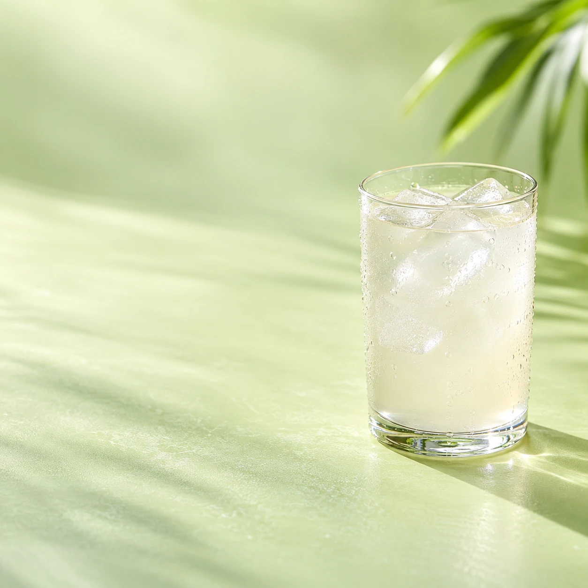
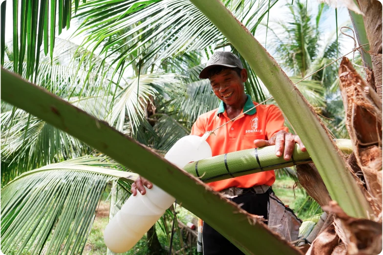

코코넛 꽃에서 채취
코코넛 열매 속 물과 구별되는 꽃 수액.
제품의 이야기는 이 원료에서 시작됩니다.
THE COCO · COCONUT BLOSSOM DRINK
코코넛 꽃 수액 음료
코코넛 꽃에서 정성스럽게 채취한 수액.
자연스러운 단맛과 원료의 이야기를
당신의 일상에 담았습니다.

COCONUTWHAT MAKES IT DIFFERENT
음료 한 병부터 요리의 한 스푼까지.
코코넛 꽃 수액이 가진 다양한 쓰임을 소개합니다.
코코넛 열매 속 물과 구별되는 꽃 수액.
제품의 이야기는 이 원료에서 시작됩니다.
농축한 시럽, 알갱이 형태의 설탕,
소금과 발효한 소스, 수액을 담은 음료.
커피와 디저트, 베이킹과 요리까지.
원하는 맛과 용도에 맞춰 골라보세요.
MEET THE COLLECTION
한 병의 음료, 한 스푼의 달콤함, 요리의 풍미.
당신의 일상에 맞는 제품을 골라보세요.
전체 제품 4개
COCONUT BLOSSOM DRINK
꽃에서 채취한 수액을 담은 음료.
코코넛 꽃의 자연스러운 단맛을 경험합니다.
COCONUT FLOWER NECTAR
꽃 수액을 농축한 액상 감미료.
음식에 곁들이거나 음료에 섞어 사용합니다.
COCONUT FLOWER SUGAR
꽃 수액을 농축해 알갱이로 만든 설탕.
음료와 베이킹에 달콤함을 더합니다.
COCONUT AMINOS
꽃 수액과 소금으로 만드는 발효 조미소스.
요리에 감칠맛과 짭짤한 풍미를 더합니다.
국내 판매 용량과 구성은 공식 스토어 오픈 시 안내합니다.
공식 스토어 안내FROM INGREDIENT TO RECIPE
음료 · 홈카페 · 식단과 요리.
제품을 사용하는 장면으로 만나보세요.
꽃에서 채취한 수액을 음료로 즐기는 방법. 제품 안내에 따라 그대로 마시거나, 과일 음료와 커피에 섞어 색다른 맛을 경험해 보세요.
KNOW BEFORE YOU CHOOSE
원료와 형태, 영양과 보관까지.
제품을 고를 때 필요한 정보를 안내합니다.
A LITTLE MORE TO KNOW
제품을 이해하는 데 필요한
자주 묻는 질문입니다.
코코넛 워터는 열매 속 물이고, 속팜 수액 음료는 코코넛 꽃에서 채취한 수액을 담은 음료입니다. 원료의 출발점이 서로 다릅니다.
제품별 열량·당류·나트륨과 실제 섭취량을 함께 확인하세요. 꽃 수액에는 자연 유래 당이 있으며, 시럽과 설탕은 단맛을 더하는 식재료입니다. 국내 판매 제품의 영양표시는 공식 스토어에서 안내할 예정입니다.
제품 라벨의 보관 온도와 개봉 후 안내를 따라 즐겨주세요. 제조사는 수액 음료의 냉장 보관을 안내하고 있습니다. 국내 판매 제품의 구체적인 보관 조건은 정식 판매 시 안내합니다.
더코코 공식 스토어를 준비하고 있습니다. 오픈 후 홈페이지의 공식 스토어 버튼으로 이동해 제품별 구성과 가격을 확인하고 구매할 수 있습니다.
프리미엄 카페, 호텔 다이닝, 식품 리테일을 위한 유통·납품 상담을 준비하고 있습니다. 용도와 제품 구성에 맞춰 상담할 수 있도록 공식 채널을 안내할 예정입니다.

SOKFARM · VIETNAMKNOW YOUR INGREDIENT
코코넛 꽃에서 정성스럽게 채취한 수액.
베트남 크메르 공동체가 이어온 전통에서
속팜의 이야기가 시작됩니다.
더코코는 속팜의 제품을 국내에 소개합니다.
원료의 출처와 제품의 특징, 요리 속 쓰임을
쉽게 이해할 수 있도록 전합니다.
FOR PROFESSIONALS
프리미엄 카페 · 호텔 다이닝 · 식품 리테일
제품의 쓰임을 함께 찾아갈 파트너를 기다립니다.